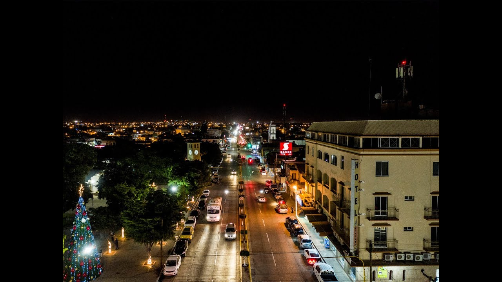
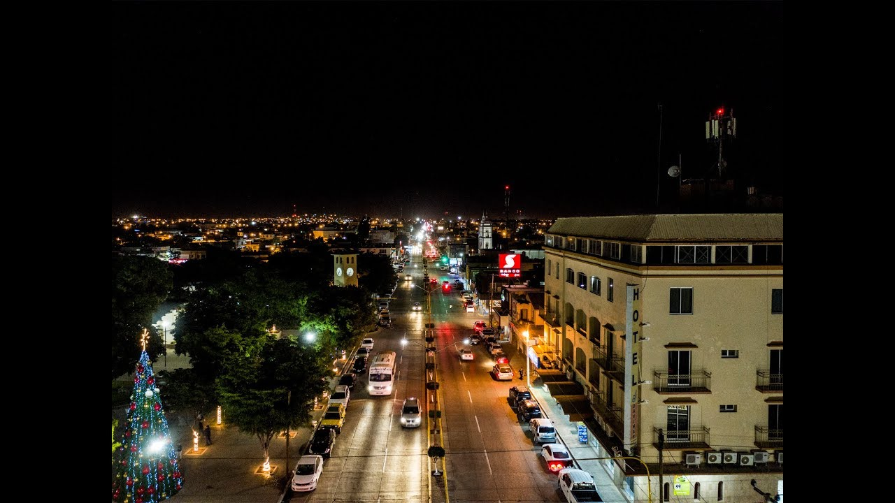

Referencias:
Berners, T. (1969, December 31). LA EVOLUCION DEL TIEMPO DE LA WED 1.0 A LA WED 4.0. timeline. Timetoast. Retrieved October 24, 2022, from https://www.timetoast.com/timelines/la-evolucion-del-tiempo-de-la-wed-1-0-a-la-wed-4-0
Nombre: Rolando Espinosa Dominguez
Lugar de Nacimiento: Guamúchil Sinaloa
Descripción de porque decidiste estudiar Sistemas Computacionales: Esta carrera fue mi segunda opcion y me intereso mas que nada por las computadoras.
Menciona las expectativas que tienes del curso: Mi expectativa sobre el curso es aprender lo suficente y que el docente sea accesible.

Nombre: Juan Rosado Rios
Lugar de Nacimiento: Minatitlan Veracruz
Descripción de porque decidiste estudiar Sistemas Computacionales: Por que siempre me gustaron las computadoras
Menciona las expectativas que tienes del curso: Aprender hacer paginas
 

Berners, T. (1969, December 31). LA EVOLUCION DEL TIEMPO DE LA WED 1.0 A LA WED 4.0. timeline. Timetoast. Retrieved October 24, 2022, from https://www.timetoast.com/timelines/la-evolucion-del-tiempo-de-la-wed-1-0-a-la-wed-4-0